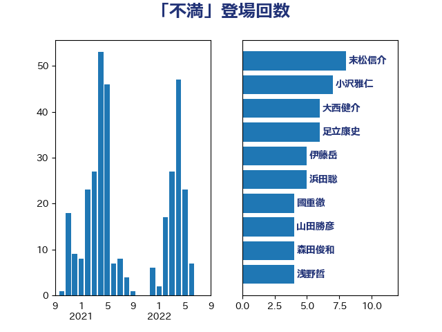

単語「不満」

| 末松信介 | 自由民主党 | 8 回 |
| 小沢雅仁 | 立憲民主党 | 7 回 |
| 大西健介 | 立憲民主党 | 6 回 |
| 足立康史 | 日本維新の会 | 6 回 |
| 伊藤岳 | 日本共産党 | 5 回 |
| 浜田聡 | NHK党 | 5 回 |
| 國重徹 | 公明党 | 4 回 |
| 山田勝彦 | 立憲民主党 | 4 回 |
| 森田俊和 | 立憲民主党 | 4 回 |
| 浅野哲 | 国民民主党 | 4 回 |
| 萩生田光一 | 自由民主党 | 4 回 |
| 野田聖子 | 自由民主党 | 4 回 |
| 串田誠一 | 日本維新の会 | 3 回 |
| 伊藤孝江 | 公明党 | 3 回 |
| 吉田統彦 | 立憲民主党 | 3 回 |
| 城井崇 | 立憲民主党 | 3 回 |
| 市村浩一郎 | 日本維新の会 | 3 回 |
| 東徹 | 日本維新の会 | 3 回 |
| 田村憲久 | 自由民主党 | 3 回 |
| 舞立昇治 | 自由民主党 | 3 回 |
| 藤木眞也 | 自由民主党 | 3 回 |
| 西村智奈美 | 立憲民主党 | 3 回 |
| 逢坂誠二 | 立憲民主党 | 3 回 |
| 大島敦 | 立憲民主党 | 2 回 |
| 奥野総一郎 | 立憲民主党 | 2 回 |
| 守島正 | 日本維新の会 | 2 回 |
| 小沼巧 | 立憲民主党 | 2 回 |
| 山添拓 | 日本共産党 | 2 回 |
| 平木大作 | 公明党 | 2 回 |
| 枝野幸男 | 立憲民主党 | 2 回 |
| 柳ヶ瀬裕文 | 日本維新の会 | 2 回 |
| 河西宏一 | 公明党 | 2 回 |
| 浮島智子 | 公明党 | 2 回 |
| 清水貴之 | 日本維新の会 | 2 回 |
| 渡辺周 | 立憲民主党 | 2 回 |
| 熊谷裕人 | 立憲民主党 | 2 回 |
| 石井苗子 | 日本維新の会 | 2 回 |
| 石川大我 | 立憲民主党 | 2 回 |
| 石川昭政 | 自由民主党 | 2 回 |
| 磯崎仁彦 | 自由民主党 | 2 回 |
| 神谷裕 | 立憲民主党 | 2 回 |
| 稲富修二 | 立憲民主党 | 2 回 |
| 茂木敏充 | 自由民主党 | 2 回 |
| 菅義偉 | 自由民主党 | 2 回 |
| 蓮舫 | 立憲民主党 | 2 回 |
| 阿部司 | 日本維新の会 | 2 回 |
| 音喜多駿 | 日本維新の会 | 2 回 |
| 高木かおり | 日本維新の会 | 2 回 |
| たがや亮 | れいわ新選組 | 1 回 |
| 一谷勇一郎 | 日本維新の会 | 1 回 |
| 三木圭恵 | 日本維新の会 | 1 回 |
| 下条みつ | 立憲民主党 | 1 回 |
| 中川貴元 | 自由民主党 | 1 回 |
| 中谷一馬 | 立憲民主党 | 1 回 |
| 中野英幸 | 自由民主党 | 1 回 |
| 井上英孝 | 日本維新の会 | 1 回 |
| 井坂信彦 | 立憲民主党 | 1 回 |
| 加田裕之 | 自由民主党 | 1 回 |
| 古賀之士 | 立憲民主党 | 1 回 |
| 吉川元 | 立憲民主党 | 1 回 |
| 吉良州司 | 無所属 | 1 回 |
| 塩村あやか | 立憲民主党 | 1 回 |
| 大石あきこ | れいわ新選組 | 1 回 |
| 太田房江 | 自由民主党 | 1 回 |
| 室井邦彦 | 日本維新の会 | 1 回 |
| 宮本周司 | 自由民主党 | 1 回 |
| 宮本徹 | 日本共産党 | 1 回 |
| 宮路拓馬 | 自由民主党 | 1 回 |
| 小池晃 | 日本共産党 | 1 回 |
| 小熊慎司 | 立憲民主党 | 1 回 |
| 小西洋之 | 立憲民主党 | 1 回 |
| 山際大志郎 | 自由民主党 | 1 回 |
| 岩田和親 | 自由民主党 | 1 回 |
| 川田龍平 | 立憲民主党 | 1 回 |
| 平口洋 | 自由民主党 | 1 回 |
| 後藤祐一 | 立憲民主党 | 1 回 |
| 斉藤鉄夫 | 公明党 | 1 回 |
| 斎藤アレックス | 国民民主党 | 1 回 |
| 新垣邦男 | 立憲民主党 | 1 回 |
| 早稲田ゆき | 立憲民主党 | 1 回 |
| 有村治子 | 自由民主党 | 1 回 |
| 末松義規 | 立憲民主党 | 1 回 |
| 本村伸子 | 日本共産党 | 1 回 |
| 松沢成文 | 日本維新の会 | 1 回 |
| 柴田巧 | 日本維新の会 | 1 回 |
| 柿沢未途 | 無所属 | 1 回 |
| 梅村みずほ | 日本維新の会 | 1 回 |
| 梅村聡 | 日本維新の会 | 1 回 |
| 森まさこ | 自由民主党 | 1 回 |
| 森山浩行 | 立憲民主党 | 1 回 |
| 森本真治 | 立憲民主党 | 1 回 |
| 武田良太 | 自由民主党 | 1 回 |
| 河野太郎 | 自由民主党 | 1 回 |
| 浅田均 | 日本維新の会 | 1 回 |
| 渡辺孝一 | 自由民主党 | 1 回 |
| 源馬謙太郎 | 立憲民主党 | 1 回 |
| 玄葉光一郎 | 立憲民主党 | 1 回 |
| 田中健 | 国民民主党 | 1 回 |
| 田村まみ | 国民民主党 | 1 回 |
| 田村貴昭 | 日本共産党 | 1 回 |
| 盛山正仁 | 自由民主党 | 1 回 |
| 矢倉克夫 | 公明党 | 1 回 |
| 石井正弘 | 自由民主党 | 1 回 |
| 石川香織 | 立憲民主党 | 1 回 |
| 礒崎哲史 | 国民民主党 | 1 回 |
| 福島みずほ | 社会民主党 | 1 回 |
| 福島伸享 | 無所属 | 1 回 |
| 笠井亮 | 日本共産党 | 1 回 |
| 笠浩史 | 無所属 | 1 回 |
| 篠原豪 | 立憲民主党 | 1 回 |
| 紙智子 | 日本共産党 | 1 回 |
| 緒方林太郎 | 無所属 | 1 回 |
| 舩後靖彦 | れいわ新選組 | 1 回 |
| 若宮健嗣 | 自由民主党 | 1 回 |
| 若松謙維 | 公明党 | 1 回 |
| 菊田真紀子 | 立憲民主党 | 1 回 |
| 藤巻健太 | 日本維新の会 | 1 回 |
| 西田実仁 | 公明党 | 1 回 |
| 西銘恒三郎 | 自由民主党 | 1 回 |
| 谷川とむ | 自由民主党 | 1 回 |
| 谷田川元 | 立憲民主党 | 1 回 |
| 赤嶺政賢 | 日本共産党 | 1 回 |
| 赤木正幸 | 日本維新の会 | 1 回 |
| 道下大樹 | 立憲民主党 | 1 回 |
| 野間健 | 立憲民主党 | 1 回 |
| 金子俊平 | 自由民主党 | 1 回 |
| 阿部知子 | 立憲民主党 | 1 回 |
| 高良鉄美 | 無所属 | 1 回 |
| 麻生太郎 | 自由民主党 | 1 回 |